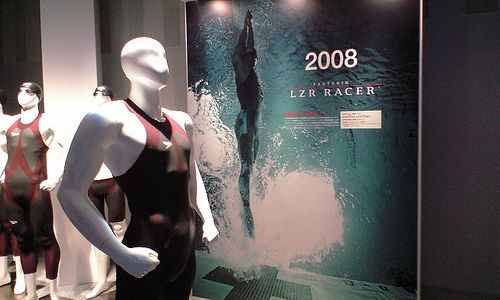

Beijing 2008 Olympics: Sports Engineering
It's not only the stadiums at the Beijing 2008 Olympics that have received the attention of engineers wielding the latest Computer-Aided Engineering (CAE) analysis software - it's also the sports events themselves.
 Beijing National Stadium (Bird's Nest)
Beijing National Stadium (Bird's Nest)
Sports engineering is primarily the domain of mechanical engineers that specialize in air and water flow, heat-transfer and structures. These three areas are the basis of the physics that underpin many sports. With the physics understanding that engineers bring to sports, it is possible to offer suggestions for technique changes and equipment development that offer competitive advantages - some are calling this 'technology doping'. It's clear that the involvement of engineers in sports has led to a new form of competition, mimicking the competitive nature of sport, but concerned with the application of technology to optimize sporting performance.
Where are the engineer's fingerprints most evident at the Beijing 2008 Olympics?
Swimming
Nowhere is it more evident at the 2008 Olympics that engineers have made an impact than with the introduction of the Speedo LZR Racer full body swimsuit - especially given its widespread media coverage. Here's an example of a relatively low-tech sport being thrust into the space age (literally - NASA helped design the swimsuit). The LZR claims to optimize a swimmer's profile for drag reduction using tight-fitting fabric (reportedly it can take up to 30 minutes to squeeze into the outfit). However, the absence of the full body LZR on Michael Phelps while winning his individual swimming events (amongst his record 8 gold medals at a single Olympics) shows that the swimsuit alone does not make the swimmer.
Speedo LZR Racer SwimsuitLicense: CC BY 2.0 by Kazuhisa OTSUBO
The depth of the Beijing pool inside the Water Cube is 3 meters, 1 meter deeper than typical Olympic sized pools. The extra depth is believed to reduce reflected pressure waves that tend to slow swimmers down. Clearly the pool is fast, world records seem to have been not only broken but shattered. For example the US men's 4 x 100m freestyle team broke the world record by nearly 4 seconds in recording 3:08.42 and 5 of the 8 teams in the final also broke the old world record - pool, swimsuit and athletes in perfect harmony.
Cycling
The involvement of engineers to minimize drag and weight in cycling no longer attracts attention - it's a given. The evidence at the 2008 Olympics of drag reduction technology for cycling is strongest in the road time trial and track events. There you'll see dimpled disk wheels (employing the same drag reduction technique found on golf balls), streamlined (tear-drop shape) helmets, low-drag tight-fitting skin suits and streamlined bicycle frames made of lightweight carbon composites.
Track and Field (Athletics)
In the 2008 sprint events you are likely to see low drag, tight-fitting outfits similar to the cyclists' - nothing new there. Nike has also made available additional long gloves and knee socks made from a dimpled fabric for drag reduction (again mimicking the dimples on golf balls - who'd have thought golf ball design would carry over into cycling and running equipment?) called the Swift System. However, I haven't notice anyone wearing the entire outfit yet.
A major concern for marathon runners at the Olympics is heat and humidity. The ice vest (a vest with ice compartments) that athletes wear prior to a race aims to reduce their core temperature ready for the inevitable heat rise during the race. Another issue related to heat is the larger performance drop-off of larger athletes compared to smaller athletes in endurance events that are held in the heat - it just wouldn't be a summer Olympics without the heat. While research supports this hypothesis there is no obvious technological solution, so expect to see smaller athletes winning endurance races, borne out by the winners of the endurance events just in:
- Women's 10,000m: Tirunesh Dibaba 5'4"
- Women's Marathon: Constantina Tomescu 5'3"
- Men's 10,000m: Kenenisa Bekele 5'5"
Using the latest synthetic track material optimized for sprinting the Beijing track has delivered a 100m world record thanks to Usain Bolt running 10.69 seconds.
Table Tennis
 Magnus Effect
Magnus Effect
The seemingly physics-defying swerving trajectory of ping pong balls from the bats of the world's best table tennis players is due to the Magnus Effect. To control the spin applied to the ball, table tennis players currently use Speed Glue, which conditions the sponge and rubber layers on a bat to enhance the contact between the bat and the ball. Due to the toxic compounds found in Speed Glue, the 2008 Olympics will be the last time you'll see Speed Glue at a major table tennis championship. Fear not though, engineers are busy investigating alternative materials and glues to keep those balls spinning.
Conclusion
Although engineers have helped and will continue to help advance athletic performance, it is clear that great athletes are still the basic ingredient for this relationship.
Feedback
Questions? Ideas? Problems?

Recent blog posts
- CFD Simulates Distant Past
- Background on the Caedium v6.0 Release
- Long-Necked Dinosaurs Succumb To CFD
- CFD Provides Insight Into Mystery Fossils
- Wind Turbine Design According to Insects
- Runners Discover Drafting
- Wind Tunnel and CFD Reveal Best Cycling Tuck
- Active Aerodynamics on the Lamborghini Huracán Performante
- Fluidic Logic
- Stonehenge Vortex Revealed as April Fools' Day Distortion Field
 Get our Blog feed
Get our Blog feed
Comments
Mens 2008 Olympic Marathon Result
You guessed it, another distance race and another small winner:
Men's Marathon: Samuel Wansiru 5'4"